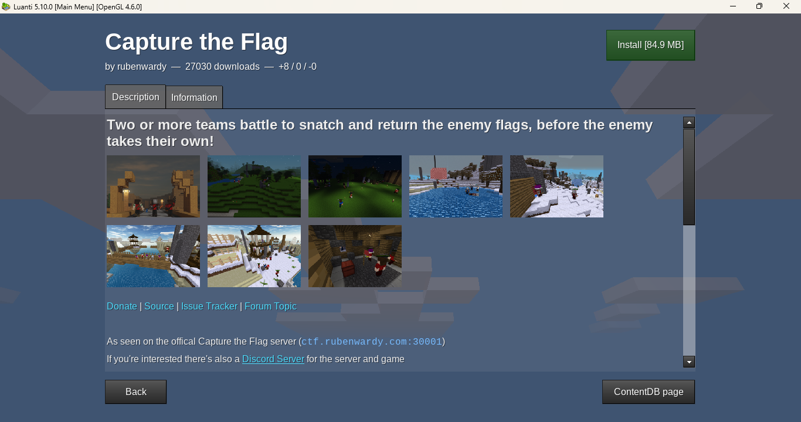
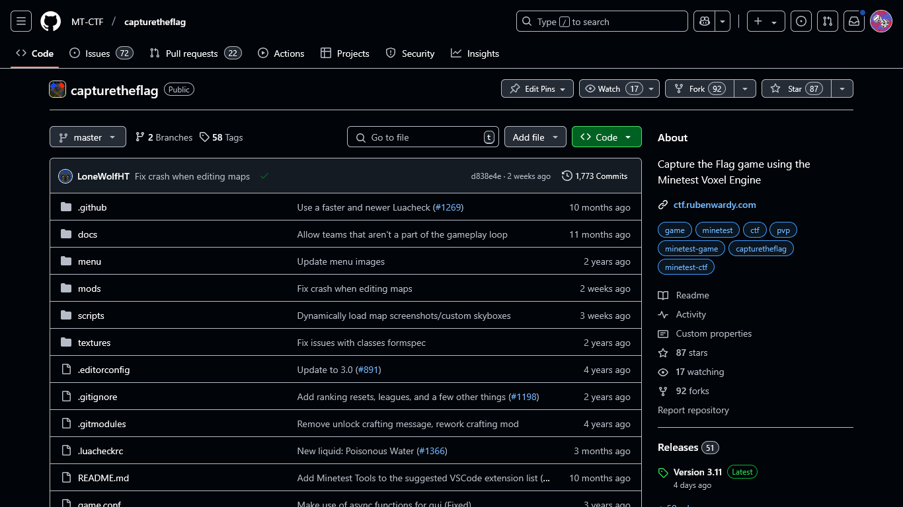
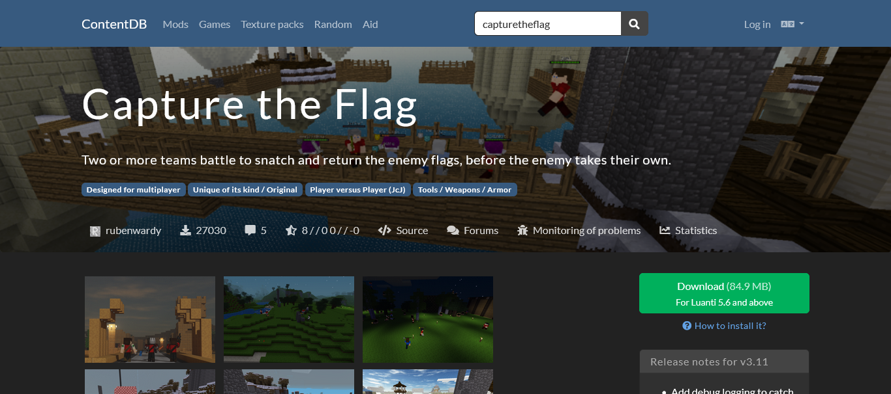
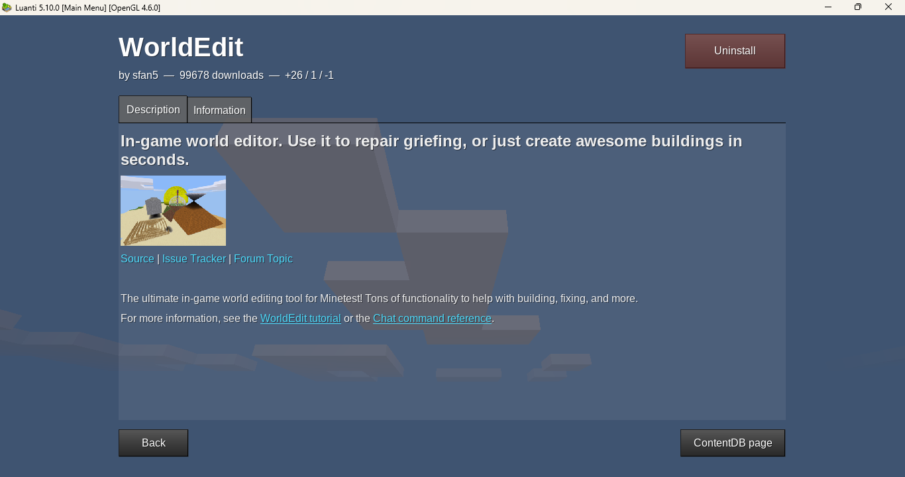
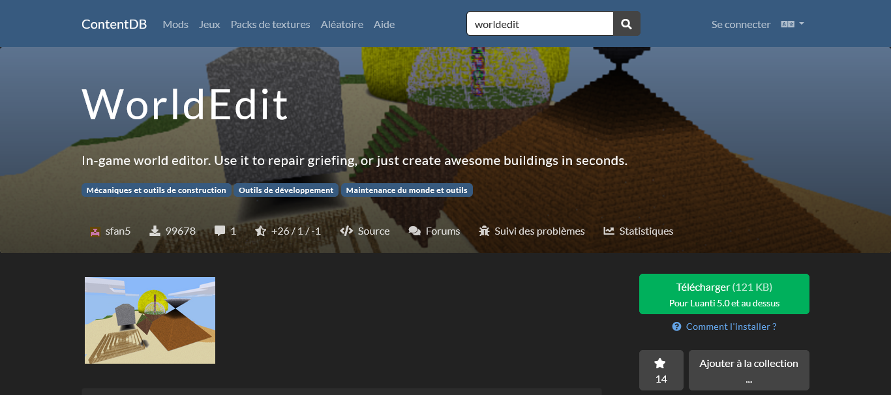
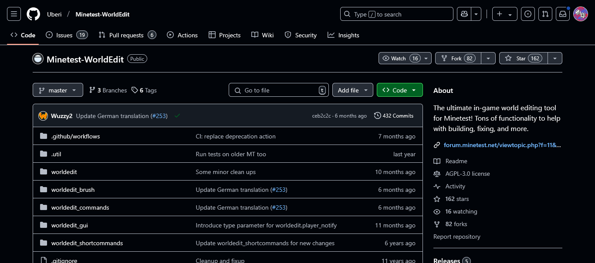
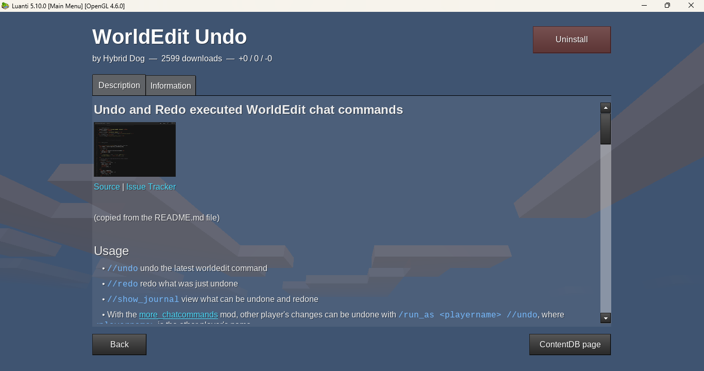
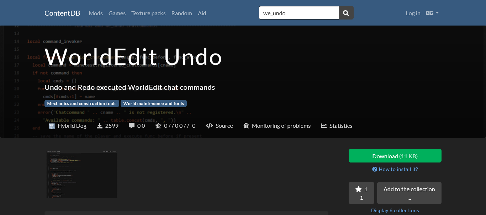
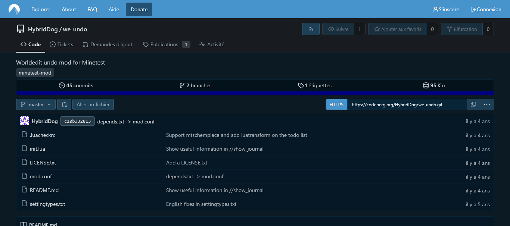

Capture The Flag
You can download capture the flag from minetest:
Go to ‘Content’ then ‘Browse online content’ then search for ‘Capture The Flag’. Click on ‘Capture The Flag by rubenwardy’ and Install

You can also visit the Capture The Flag github: Clic here
Go to the URL above and click on ‘code’ then download ZIP. Go to your downloads, right click on the folder click on unzip then put the folder in minetest or luanti/games,
you also need to install 4 other dependencies:
🔹mhud - Github mhud
🔹rawf - Github rawf
🔹ChatCmdBuilder - Github ChatCmdBuilder
🔹skybox - Github skybox
🔹maps - Github maps
Once downloaded like Capture the Flag, you need to unzip them and put them in:
🔹minetest or luanti/games/capturetheflag/mods/other for the ChatCmdBuilder and skybox folder.
🔹minetest or luanti/games/capturetheflag/mods/apis for rawf and mhud folder.
🔹minetest or luanti/games/capturetheflag/mods/ctf/ctf_map/maps for maps.

And finally via ContentDB online: Clic here
Click on Download then unzip and put the downloaded folder in minetest or luanti/games.

Making a map
Conseils pour la création de maps.
Advice
Conseils pour la création de maps.
Worldedit
There are 3 ways to download Worldedit undo:
🔹From minetest: ‘Content’ then ‘Browse online content’, then search for ‘worldedit undo’. Click on ‘Worldedit by sfan5’ and Install.

🔹From the CDB:
ContentDB Worldedit, click on download then unzip the folder and put it in
minetest or luanti/mods

🔹Or from Github:
Github Worldedit undo, click on "code" and "download zip" then download zip then unzip the folder and put it in
minetest or luanti/mods

There are a lot of commands with Worldedit, here is a list of the most useful ones
🔹//help [all/] Get help for WorldEdit commands. all shows all WorldEdit commands, the help text for the given command.
🔹//pos1 or //1 Set WorldEdit region position 1 to the player's location. //pos2 or //2 Set WorldEdit region position 2 to the player's location.
🔹//volumeDisplay the volume of the current WorldEdit region.
🔹//set ‹node› Set the current WorldEdit region to ‹node›.
🔹//mix ‹node1› [count1] ‹node2› [count2] ...Fill the current WorldEdit region with a random mix of ‹node1›, ‹node2›,
... Weightings can be optionally specified via the [count1], [count2], ... parameters after a node name.
🔹//replace ‹search node› ‹ replace node› Replace all instances of ‹search node› with ‹replace node› in the current WorldEdit region.
🔹//replaceinverse ‹search node› ‹ replace node› Replace all nodes other than ‹search node› with ‹replace node› in the current WorldEdit region.
🔹//replace ‹search node› ‹ replace node› Replace all instances of ‹search node› with ‹replace node› in the current WorldEdit region.
🔹//hollowcube ‹width› ‹height› ‹length› ‹node› Adds a hollow cube with its ground level centered at WorldEdit position 1 with dimensions ‹width› x ‹height› x ‹length›, composed of ‹node›.
🔹//cube ‹width› ‹height› ‹length› ‹node› Adds a cube with its ground level centered at WorldEdit position 1 with dimensions ‹width› x ‹height› x ‹length›, composed of ‹node›.
🔹//hollowsphere ‹radius› ‹node› Add hollow sphere centered at WorldEdit position 1 with radius ‹radius›, composed of ‹node›.
🔹//sphere ‹radius› ‹node› Add sphere centered at WorldEdit position 1 with radius ‹radius›, composed of ‹node›.
🔹//hollowdome ‹radius› ‹node› Add hollow dome centered at WorldEdit position 1 with radius ‹radius›, composed of ‹node›.
🔹//dome ‹radius› ‹node› Add dome centered at WorldEdit position 1 with radius ‹radius›, composed of ‹node›.
🔹//hollowcylinder ‹x/y/z/?› ‹length› ‹radius1› [radius2] ‹node› Add hollow cylinder at WorldEdit position 1 along the given axis with length ‹length›, base radius ‹radius1›
(and top radius [radius2]), composed of ‹node›.
🔹//cylinder ‹x/y/z/?› ‹length› ‹radius1› [radius2] ‹node› Add cylinder at WorldEdit position 1 along the given axis with length ‹length›, base radius ‹radius1›
(and top radius [radius2]), composed of ‹node›.
🔹//hollowpyramid ‹x/y/z/?› ‹height› ‹node› Add hollow pyramid centered at WorldEdit position 1 along the given axis with height ‹height› composed of ‹node›.
🔹//pyramid ‹x/y/z/?› ‹height› ‹node› Add pyramid centered at WorldEdit position 1 along the given axis with height ‹height› composed of ‹node›.
🔹//spiral ‹length› ‹height› ‹spacer› ‹node› Add spiral centered at WorldEdit position 1 with side length ‹length›, height ‹height›, space between walls ‹spacer›, composed of ‹node›.
🔹//copy ‹x/y/z/?› ‹amount› Copy the current WorldEdit region along the given axis by ‹amount› nodes.
🔹//move ‹x/y/z/?› ‹amount› Move the current WorldEdit positions and region along the given axis by ‹amount› nodes.
🔹//stack ‹x/y/z/?› ‹count› Stack the current WorldEdit region along the given axis ‹count› times.
🔹//transpose ‹x/y/z/?› ‹x/y/z/?› Transpose the current WorldEdit positions and region along given axes.
🔹//flip ‹x/y/z/?› Flip the current WorldEdit region along the given axis.
🔹//rotate ‹x/y/z/?› ‹angle› Rotate the current WorldEdit positions and region along the given axis by angle ‹angle› (90 degree increment).
🔹//orient ‹angle› Rotate oriented nodes in the current WorldEdit region around the Y axis by angle ‹angle› (90 degree increment).
🔹//fixlight Fixes the lighting in the current WorldEdit region.
🔹//drain Removes any fluid node within the current WorldEdit region.
🔹//clearcut Removes any plant, tree or foliage-like nodes in the selected region.
🔹//save ‹file› Save the current WorldEdit region to "(world folder)/schems/‹file›.we".
🔹//load ‹file› Load nodes from "(world folder)/schems/‹file›.we" with position 1 of the current WorldEdit region as the origin.
🔹//mtschemcreate ‹file› Save the current WorldEdit region using the Minetest Schematic format to "(world folder)/schems/‹file›.mts".
🔹//mtschemplace ‹file› [rotation] Load nodes from "(world folder)/schems/‹file›.mts" with position 1 of the current WorldEdit region as the origin.
Valid values for [rotation] are 0, 90, 180, and 270.
Worldedit Undo
Worldedit undo lets you go back on a command you've just done.
It's essential with Worldedit if you do something you don't want to, you can delete it.
There are 3 ways to download Worldedit undo:
🔹From minetest: ‘Content’ then ‘Browse online content’, then search for ‘worldedit undo’. Click on ‘Capture The Flag Hybrid dog’ and Install.

🔹From the CDB:
ContentDB Worldedit undo, click on download then unzip the folder and put it in
minetest or luanti/mods

🔹Or from codeberg:
Codeberg Worldedit undo, click on
... then download zip then unzip the folder and put it in
minetest or luanti/mods

The different commands:
🔹//undo Allows you to go back an action, which can be executed several times in a row.
🔹//redo Redo what was removed with //undo.
🔹//show_journal Enables you to see what can be undone or redone
Worldedit Additions
Fonctionnalités supplémentaires de Worldedit.
Terraform
Outils de terraformation.